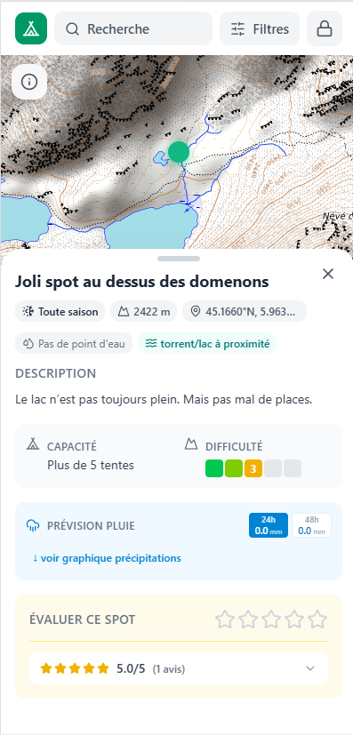
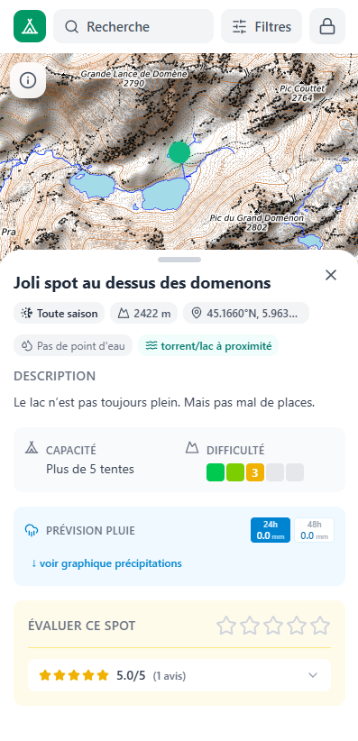
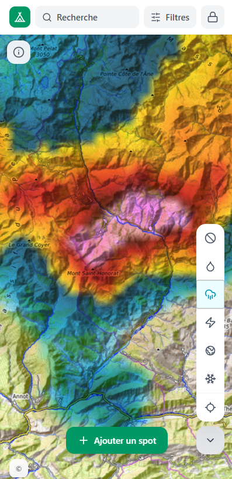
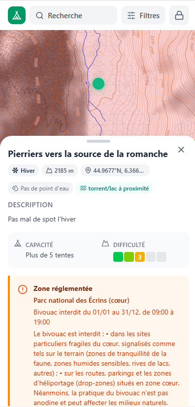

Outil pédagogique & cartographique — Phase prototype
Bivouac est une plateforme qui croise cartographie, données réglementaires institutionnelles et retours terrain pour orienter les pratiquants du bivouac en France vers une pratique responsable.


Le constat
Parc national, parc naturel régional, réserve naturelle gérée par l'ONF ou un syndicat mixte, arrêté préfectoral d'une commune, zone Natura 2000… La superposition des régimes est réelle. Un même massif peut combiner plusieurs statuts, chacun portant ses propres règles sur le bivouac. Aucun outil ne les agrège.
Les institutions ont l'obligation légale de rendre leurs arrêtés et réglementations accessibles — et elles s'y conforment. Mais l'affichage sur un panneau de parking ne suffit pas quand le sac à dos est déjà bouclé et que le départ est dans une heure. Le biais est connu : « On l'a vu trop tard, on n'a pas pu faire autrement que d'y aller. » Bivouac intervient en amont, en renfort des efforts de communication existants, pour rendre l'information incontournable avant le départ.
Les gestionnaires de territoires communiquent — sites web, bulletins, signalétique. Les offices de tourisme jouent souvent ce rôle de relais, mais l'information réglementaire y est fréquemment incomplète ou approximative : les agents ne peuvent pas maîtriser la totalité des subtilités propres à chaque statut de protection. Et dans tous les cas, aucun canal ne rassemble l'ensemble de ces réglementations dans un espace commun, cartographique, directement utilisable par le pratiquant.
La réponse
Les gestionnaires de territoires (parcs nationaux, PNRs, réserves naturelles) administrent directement leurs zones réglementées dans la plateforme. L'information est sourcée à la racine, à jour, et attribuée à son émetteur légitime.
Zones protégées, points d'eau, périmètres de protection : ces données sont extraites et recalculées en temps réel depuis OpenStreetMap via l'API Overpass. Elles complètent l'information institutionnelle sans mobiliser les partenaires.
Conditions de terrain, saisonnalité, accès réels — les utilisateurs complètent l'information cartographique par une connaissance de terrain que les données ouvertes ne capturent pas. Un système de gouvernance limite les dérives et protège les lieux sensibles.
Bivouac n'est pas un outil d'autorisation. Il oriente et informe. La responsabilité de vérifier la réalité terrain appartient au pratiquant. Cette posture protège les partenaires institutionnels et crédibilise l'outil auprès des régulateurs.
Le prototype

Le radar précipitations et le mode hiver s'activent en un clic. Ici, des précipitations visibles au col de Maure — une information directement utile avant de poser sa tente.

La fiche de zone affiche la réglementation précise : bivouac interdit du 01/01 au 31/12 dans le cœur du parc, avec les nuances propres aux zones de tranquillité et d'héliportage.
Chaque spot affiche altitude, saison, accès à l'eau, capacité, difficulté et prévision de précipitations. Les contributions de la communauté complètent ce que les données institutionnelles ne capturent pas.
Perspectives
Le socle cartographique et réglementaire de Bivouac est conçu pour accueillir des modules complémentaires, développés en co-construction avec les gestionnaires de terrain. Trois directions sont déjà identifiées.
Sur certains sites à forte pression — le lac Blanc à Chamonix, le lac de la Muzelle en Oisans — des réflexions sont déjà engagées par les administrations compétentes autour de systèmes de quota ou d'accès régulé. Bivouac se positionne comme l'outil capable d'en accompagner la mise en œuvre, d'intégrer ces décisions dans la plateforme et de les rendre lisibles pour les pratiquants.
L'ouverture de la chasse transforme radicalement les conditions de sécurité d'un bivouac. Intégrer les calendriers des zones chassées — y compris les ouvertures prévues dans les prochains jours — permettrait aux pratiquants d'anticiper et aux fédérations de chasse d'assurer une meilleure cohabitation des usages.
Certains secteurs sont critiques à des périodes précises, sans que la réglementation formelle ne le signale toujours suffisamment. Les zones de nidification du tétras-lyre sur les sommets chartrousins en sont un exemple concret. Bivouac pourrait accueillir ces données saisonnières en lien direct avec les gestionnaires naturalistes concernés.
Partenariat
Vous gérez un territoire réglementé. Bivouac vous offre un canal direct pour que vos règles atteignent réellement les pratiquants — sur le terrain, au moment où ils en ont besoin.
Bivouac est un projet numérique en phase de structuration, à la croisée des enjeux de tourisme de nature, de sensibilisation environnementale et de valorisation des territoires.
État du projet
Bivouac existe depuis près de dix ans sous forme de maquette. Avec l'émergence des outils de prototypage augmentés, le projet a franchi une étape décisive : un prototype dynamique intégrant des données réelles a été construit et éprouvé.
Ce prototype a permis de valider la cohérence du modèle — cartographie réglementaire, trois types de données, gouvernance des contributions — et d'identifier les conditions d'une industrialisation sérieuse.
La phase suivante est un développement complet, conditionné à l'engagement de premiers partenaires institutionnels.
Types de données articulés : institutionnelles, calculées, empiriques
De maturation du concept, depuis les études jusqu'au prototype fonctionnel
Recherche de partenaires fondateurs pour structurer le développement
Prendre contact
Vous gérez un espace naturel réglementé ou vous pilotez des politiques de tourisme de nature ? Prenons trente minutes pour évaluer ensemble ce que Bivouac peut apporter à votre contexte.
Écrire un messagePierre — Designer produit, initiateur de Bivouac
Prospection de partenaires institutionnels fondateurs
Alpes françaises — ouvert à d'autres massifs